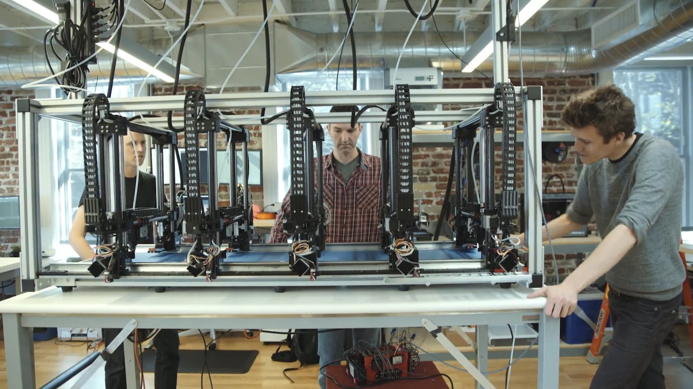

-
Introduction
CloseKaitlyn Hovanec- Went to Berklee College of Music, and University of Nebraska at Omaha. Studied neuroscience and music.
Kaitlyn Works in software, design, and UX. She designs and develops websites, while also enhancing the customer experience. When a customer has a complaint, she is the one who actually makes the chances you see on the website.
Matthew Hovanec- Went to the university of nebraska at Lincon. Studied electrical engineering.
Matthew works in hardware, software, and firmware. He builds the physical mechanical parts, then codes the firmware, then adapts the software to the web.
Software is digital, such as a website or database, while hardware is solid, such as a computer or a router. There are two types of software, front end and back end. Front end is everything you see and can interact with such as the home page on a website to the notorious Google logo. Back end software is basically the systems in a website that does the computing such as the commands that tell you how much you would weigh on mars to the code that goes into your calculator.

-
Projects
CloseHova Labs
Hova labs is a sftware company which specializes in R&D, and was started by Kaitlyn and Matt.
Women Who Code
Women who Code is a global nonprofit which helps women build their career by providing work opportunities and education for women. Specifically made for software development.
Autodesk
Autodesk does computer aided drafting (CAD). CAD is able to digitalize drafts of structures such as buildings or highways. The company also makes 3D printing and manufacturing software. Matt writes software for real time communication between multiple 3D printers.
Project Escher
- A 3D printer with multiple heads.
- Cuts the time of printing large objects from months and weeks to just hours.
- The first of its kind.
- Has five replaceable heads.
- One main computer called the conductor which gives each printhead its specified job.
The Synesthesia Network
The Synesthesia Network is a social network similar to facebook. It is a resource for people with synesthesia, and people who study it. it allows people to take tests and see what types of synesthesia they have, and if they choose, allow their results to be used by researchers around the world in order to further our understanding of synesthesia.
The Hovalin
The Hovalin is a 3D printable violin. It was developed by the hovas. It’s main purpose was to be a violin that could be easily printed using inexpensive 3D printers. It’s opened sourced so anybody with a 3D printer can download the files to make one and print one right from home at a cheaper price than actually buying one.
-
My Goals
CloseMy Career
Weather it comes down to fighting cyber warfare by designing cyber security at West Point to designing 3D printable tools, coding is an amazing career option with many fulfilling opportunities. Cars, planes, and even houses can be 3D printed. such an expanding field must have a great demand. That's why a software designer is a great career choice along with being just awesome as is. I am definitely